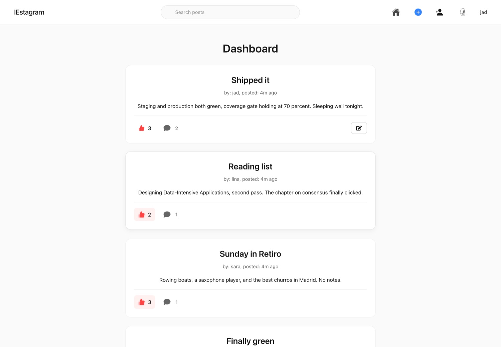
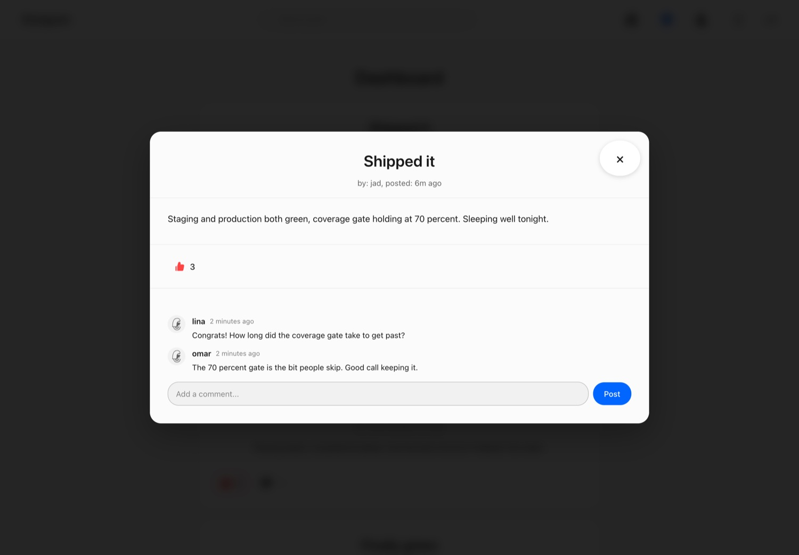
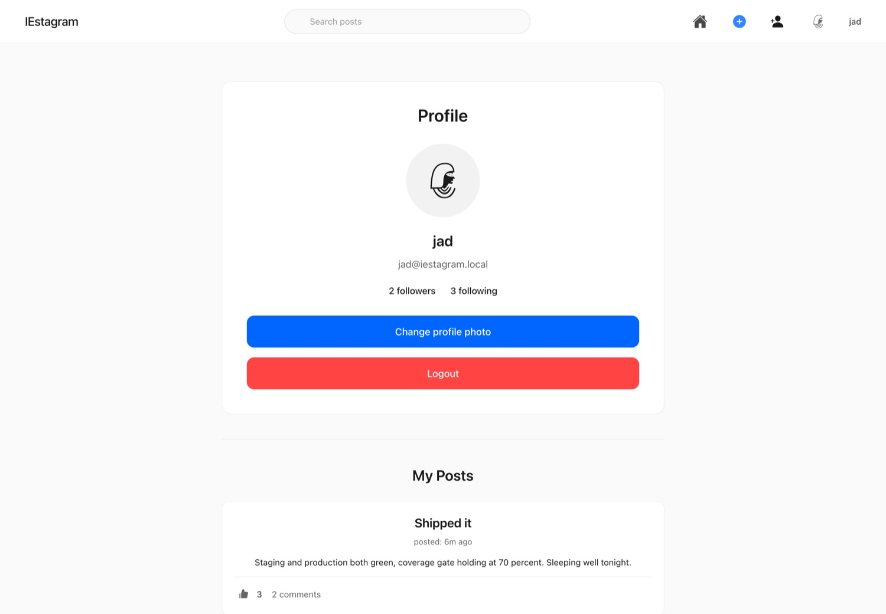
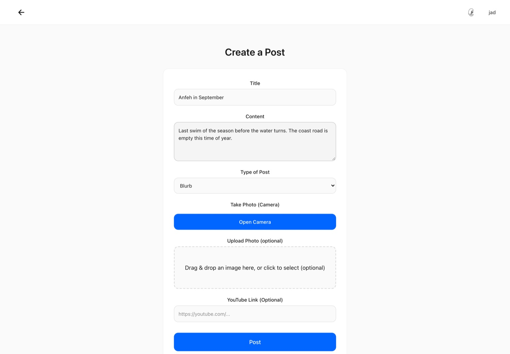

Full-stack — December 2025
IEstagram — Cloud-Based Social Platform
A working social network: sign up, post text, images or video links, like and comment, follow people, and watch the feed update as it happens. Built by an Agile Scrum team with staging and production environments on Azure and a CI/CD pipeline that enforces test coverage.
- Team
- Agile Scrum, university capstone
- Frontend
- React 19, TypeScript, Vite, Tailwind, DaisyUI
- Backend
- Node.js, Express, TypeScript, PostgreSQL
- Cloud
- Azure, AWS S3, AWS Secrets Manager
What it does
- Accounts and feeds. Email and password signup, a personalised feed of posts from people you follow, sorting by most recent or most liked, and search across post titles and content.
- Posts with real media. Text, images uploaded or captured from the device, and YouTube video links. Images go to an S3 bucket with a 5 MB ceiling, handled through Multer.
- Social graph. Follow and unfollow, suggested users, profiles with follower and following counts.
- Live updates. Socket.io pushes new comments, likes and posts to open clients, and the feed refreshes itself when a following relationship changes rather than waiting for a reload.




These are the real application. The original cloud database is no longer provisioned, so the schema was rebuilt from the backend's own queries, run against local PostgreSQL, and populated with demo accounts through the app's own signup, post, follow, like and comment endpoints. No screen here is a mockup.
Cloud and credentials
The database is PostgreSQL, and the configuration deliberately does not care where it lives: a local instance, AWS RDS or Azure PostgreSQL all work through the same path. Credentials come either from environment variables or from AWS Secrets Manager when a secret ARN is configured, so production never needs a password sitting in a file.
Staging is a first-class environment rather than an afterthought — the configuration layer resolves staging-prefixed variables ahead of the regular ones, so the same build runs in both places without a code change. Application Insights provides telemetry on Azure.
The pipeline
This was the part of the module that mattered most, and the part I would defend hardest in a
review. The GitHub Actions workflow installs, typechecks with tsc, builds with
Vite, runs the Vitest suite, and verifies the build output before anything is uploaded as an
artifact. Coverage is enforced, not merely reported.
- Docker images for the application, with a Compose stack for running the whole thing locally.
- Automated testing with Vitest and Testing Library on the frontend, Jest on the backend.
- Coverage enforcement in CI, which is what stops a green pipeline from meaning nothing.